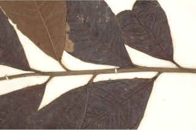
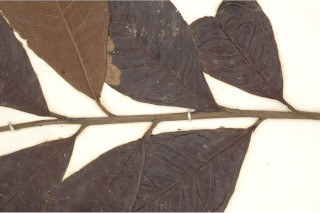

Small trees up to 4 m tall.
4 ಮೀ. ಎತ್ತರದವರೆಗಿನ ಸಣ್ಣ ಮರಗಳು.
Small trees up to 4 m tall.
சிறியமரங்கள் 4 மீ. உயரம் வரை வளரக்கூடியது.
Young branchlets terete, densely scaly.
ಕಿರುಕೊಂಬೆಗಳು ದುಂಡಾಗಿದ್ದು ದಟ್ಟವಾದ ಶಲ್ಕೆಗಳಿಂದ ಕೂಡಿರುತ್ತವೆ.
Young branchlets terete, densely scaly.
சிறியநுனிக்கிளைகள் குறுக்குவெட்டுத் தோற்றத்தில் வளையமானது, அடர்த்தியாக செதில்களுடையது.
Leaves simple, alternate, spiral; petiole 0.5-1 cm long, canaliculate, scaly when young; lamina 5.5-11.4 x 3-5 cm, elliptic-lanceolate to elliptic-oblanceolate , apex caudate - acuminate, base cuneate, margin crenate-serrate, transparent gland dotted, scaly beneath; midrib canaliculate above; secondary_nerves ca. 14 pairs, strong, impressed above, looped near margin; tertiary_nerves reticulo-percurrent.
ಎಲೆಗಳು ಸರಳವಾಗಿದ್ದು ಪರ್ಯಾಯ ಮತ್ತು ಸುತ್ತು ಜೋಡನಾ ವ್ಯವಸ್ಥೆಯಲ್ಲಿರುತ್ತವೆ; ತೊಟ್ಟುಗಳು 0.5 ರಿಂದ 1 ಸೆಂ.ಮೀ. ಉದ್ದ ಹೊಂದಿದ್ದು,ಕಾಲುವೆಗೆರೆ ಸಮೇತವಿದ್ದು ಎಳೆಯದಾಗಿದ್ದಾಗ ಶಲ್ಕೆಗಳ ಸಮೇತವಿರುತ್ತವೆ;ಪತ್ರಗಳು 5.5 - 11 X 3 – 5 ಸೆಂ.ಮೀ.ವರೆಗಿನ ಗಾತ್ರವಿದ್ದು ಅಂಡವೃತ್ತ – ಭರ್ಜಿಯಿಂದ ಅಂಡವೃತ್ತ- ಬುಗುರಿ-ಭರ್ಜಿಯ ಆಕಾರ ಹೊಂದಿದ್ದು, ಬಾಲರೂಪಿ-ಕ್ರಮೇಂ ಚೂಪಾಗುವ ತುದಿ,ಬೆಣೆಯಾಕಾರದ ಬುಡ ,ದುಂಡೇಣು ದಂತಿತ-ಗರಗಸ ಮಾದರಿಯ ಅಂಚು ಹೊಂದಿರುತ್ತವೆ,ಪತ್ರದ ತಳಭಾಗ ಪಾರದರ್ಶಕ ಚುಕ್ಕೆಗಳಿಂದ ಮತ್ತು ಶಲ್ಕೆಗಳಿಂದ ಕೂಡಿರುತ್ತವೆ;ಮಧ್ಯ ನಾಳ ಮೇಲ್ಭಾಗದಲ್ಲಿ ಕಾಲುವೆ ಗೆರೆ ಸಮೇತವಾಗಿರುತ್ತವೆ; ಎರಡನೇ ದರ್ಜೆಯ ನಾಳಗಳು ಅಂದಾಜು 14 ಜೋಡಿಗಳಿದ್ದು ಬಲಿಷ್ಠವಾಗಿರುತ್ತವೆ ಮತ್ತು ಪತ್ರಗಳ ಮೇಲ್ಭಾಗದಲ್ಲಿ ಅಚ್ಚೊತ್ತಿದಂತಿರುತ್ತವೆ ಹಾಗೂ ಅಂಚಿನ ಬಳಿ ಕುಣಿಕೆಗೊಂಡಿರುತ್ತವೆ;ಮೂರನೇ ದರ್ಜೆಯ ನಾಳಗಳು ಜಾಲಬಂಧ ನಾಳ ವಿನ್ಯಾಸದಲ್ಲಿದ್ದು ಎಲೆ ದಿಂಡಿಗೆ ಅಡ್ಡವಾಗಿ ಕೂಡುತ್ತವೆ.
Leaves simple, alternate, spiral; petiole 0.5-1 cm long, canaliculate, scaly when young; lamina 5.5-11.4 x 3-5 cm, elliptic-lanceolate to elliptic-oblanceolate , apex caudate - acuminate, base cuneate, margin crenate-serrate, transparent gland dotted, scaly beneath; midrib canaliculate above; secondary_nerves ca. 14 pairs, strong, impressed above, looped near margin; tertiary_nerves reticulo-percurrent.
இலைகள் தனித்தவை, மாற்றுஅடுக்கமானவை, சுழல் போன்று அமைந்தவை; இலைக்காம்பு 0.5-1 செ.மீ. நீளமானது, குறுக்குவெட்டுத் தோற்றத்தில் கேனாலிகுலேட், இளம்பருவத்தில் செதில்களுடையது; இலை அலகு 5.5-11.4 x 3-5 செ.மீ., நீள்வட்ட-ஈட்டி வடிவானது முதல் நீள்வட்ட-தலைகீழ் ஈட்டி வடிவானது, அலகின் நுனி வால்-அதிக்கூரியது, அலகின் தளம் ஆப்பு வடிவானது, அலகின் விளிம்பு பிறை போன்ற பற்களுடையது-ரம்ப பற்களுடையது, ஒளிபுகும் சுரப்பி புள்ளிகளுடையது, அலகின் கீழ்பரப்பு செதில்களுடையது; மையநரம்பு மேற்புறத்தில் அலகின் பரப்பைவிட பள்ளமானது; இரண்டாம் நிலை நரம்புகள் 14 ஜோடிகள், தடித்தவை, அலகின் பரப்பைவிட பள்ளமானது, ஒன்றொடுன்று விளிம்பின் அருகில் (லுப்) இணைந்தவை; மூன்றாம் நிலை நரம்புகள் வலைப்பின்னல்-பெர்க்கரண்ட் அமைப்பு கொண்டது.
Inflorescence axillary or terminal umbellate cymes; flowers white to pink.
ಪುಷ್ಪ ಮಂಜರಿಗಳು ಅಕ್ಷಾಕಂಕುಳಿನಲ್ಲಿನ ಅಥವಾ ಅಗ್ರದಲ್ಲಿನ ಪೀಠಛತ್ರ ಮಧ್ಯಾರಂಭಿ ಮಾದರಿಯವು ಹೂಗಳು ಬಿಳಿಯಿಂದ ನಸುಗೆಂಪು ಬಣ್ಣದಲ್ಲಿರುತ್ತವೆ.
Inflorescence axillary or terminal umbellate cymes; flowers white to pink.
மஞ்சரி இலைக்கோணங்களில் காணப்படும் அல்லது மஞ்சரி தண்டின் நுனியில் காணப்படும் அம்பல்லேட் சைம் வகை; மலர்கள் வெள்ளை நிறமானது முதல் பிங்க் நிறமானது.
Berry, globose, black; seed one.
ಬೆರ್ರಿ ಫಲಗಳು ಗೋಳಾಕಾರದಲ್ಲಿರುತ್ತವೆ;ಬೀಜ ಒಂದು.
Berry, globose, black; seed one.
முழுச்சதைகனி (பெர்ரி), கோளவடிவானது, கருப்பு; ஒரு விதையுள்ள கனி.
 
